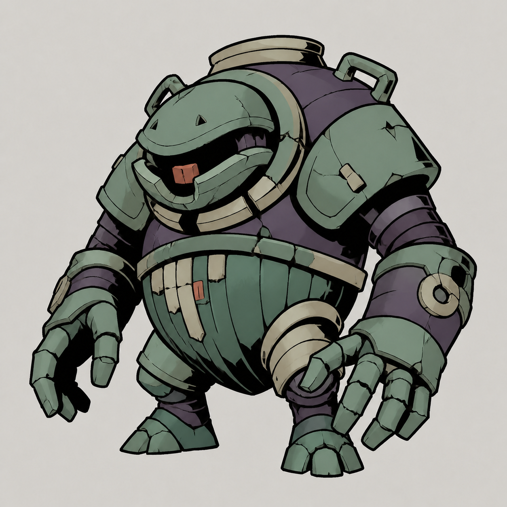
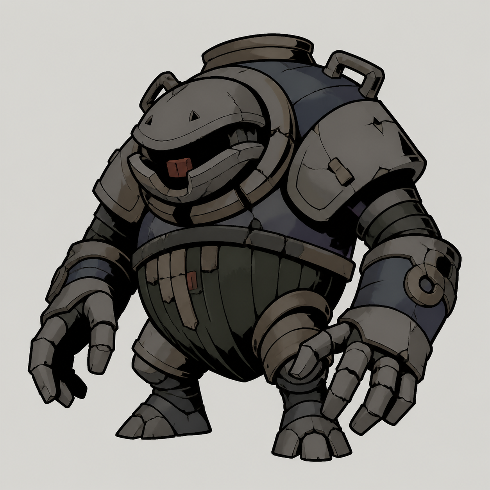
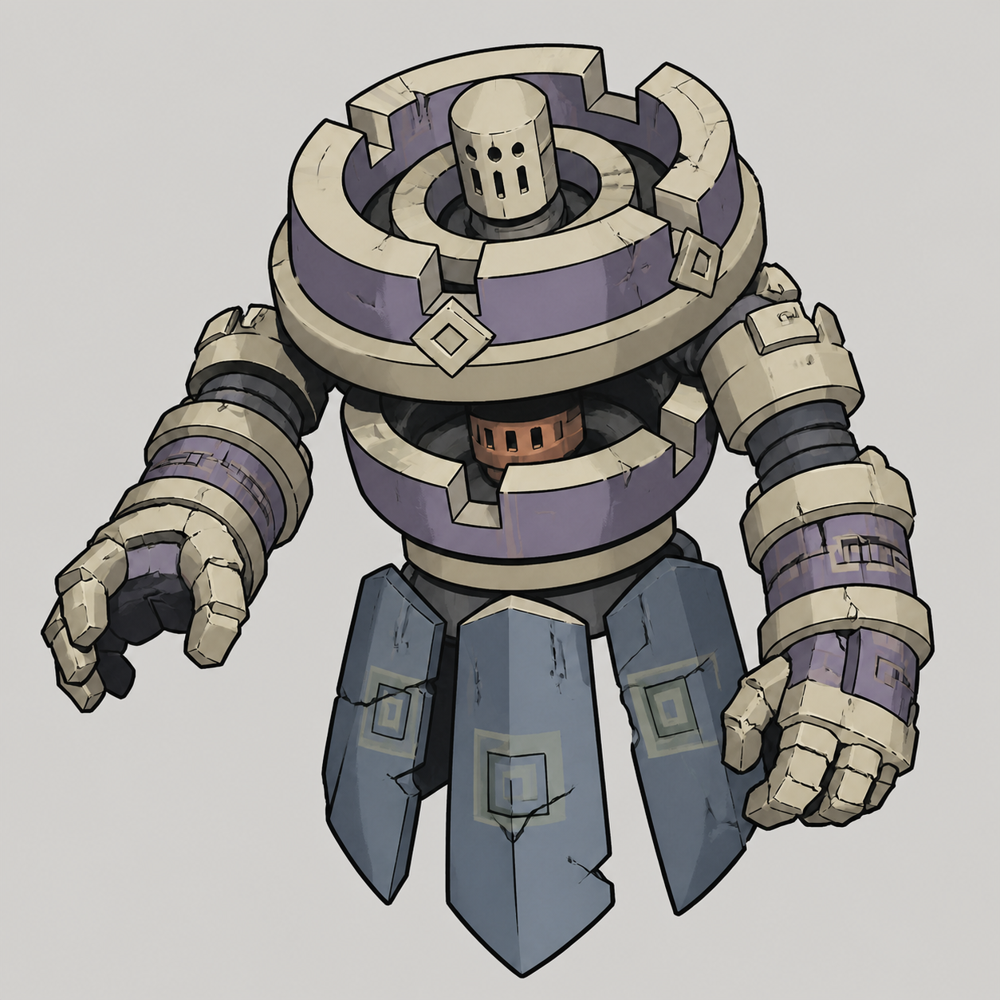
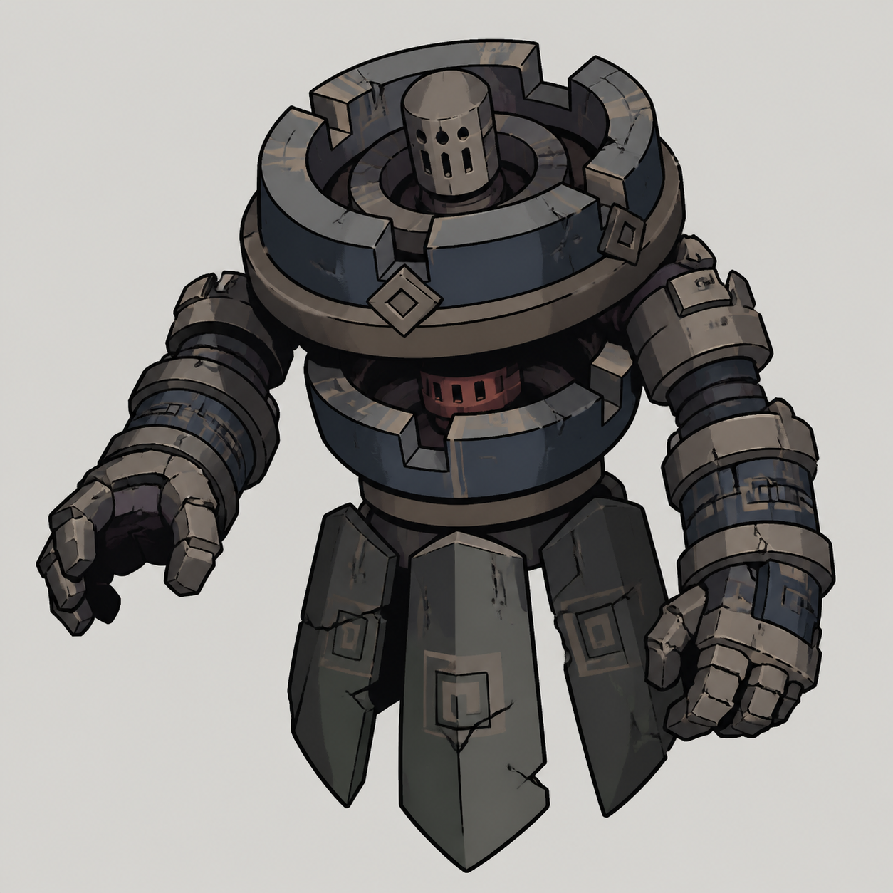
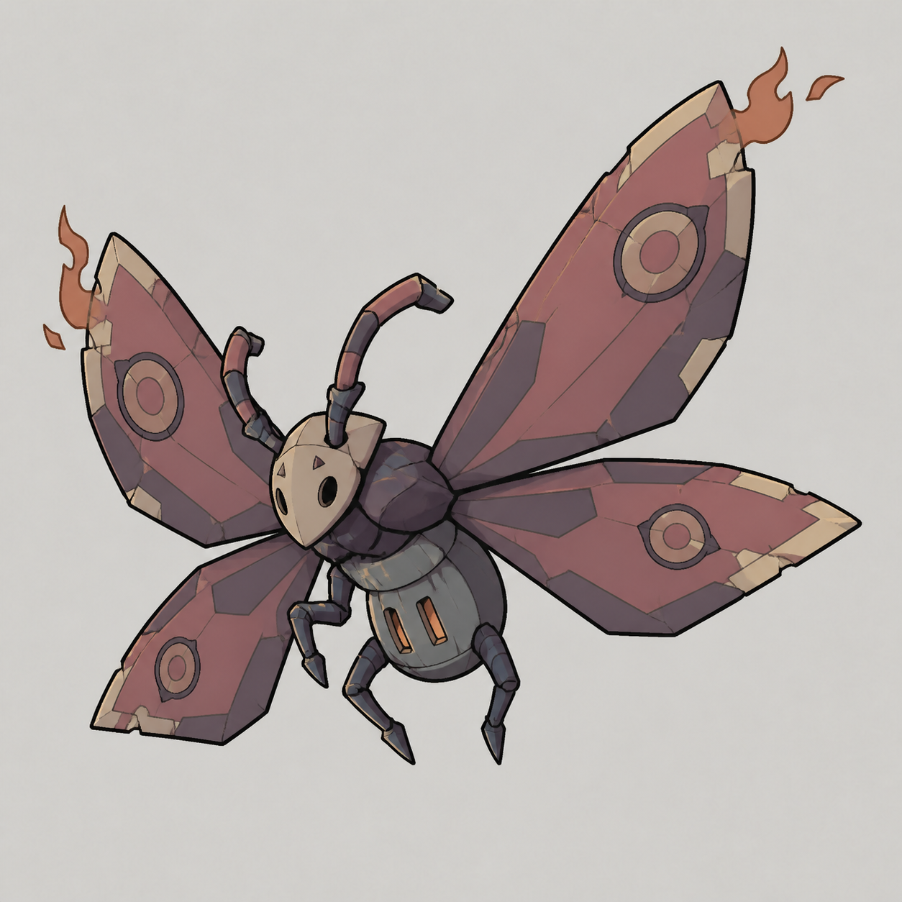

2026.08.27 · 第三轮样稿 / 四张视觉已获用户批准
低饱和多色 · 动漫块面 · 陶瓷与炉火
以你提供的两张图为造型与画法基准，不沿用灰色板，也不沿用上一轮偏写实、偏鲜艳的处理。
01–02 是参考图保形改色；03–04 是同画法的物种扩展。四张均为灰底审批稿，未替换游戏资源。请分别看配色、块面简洁度与窑火身份。

01 / 保形改色 / 待审批
烬噬 · 灰青釉
保留大口陶罐、短腿与双臂结构。主壳灰青釉，侧片烟紫，口内小块暗暖色。
查看原尺寸展开你提供的灰色参考

造型与画法正向参考；灰色配色未通过。不是当前生产图。

02 / 保形改色 / 待审批
窑心·烬 · 烟紫釉
保留同心炉环、圆筒头与下摆陶片。主壳烟紫，边缘米白，下摆灰蓝。
查看原尺寸展开你提供的灰色参考

造型与画法正向参考；灰色配色未通过。不是当前生产图。

03 / 新增方向样张 / 待审批
火蛾 · 暗砖红
以概括陶化翼片和小炉腹延续窑火身份。暗砖红与烟紫，翼尖只留少量余火。
查看原尺寸
04 / 新增方向样张 / 待审批
釉裂兽 · 雾蓝釉
雾蓝陶壳、米白口鼻，保持兽形而非人形陶甲；重点检查双口辨识度。
查看原尺寸